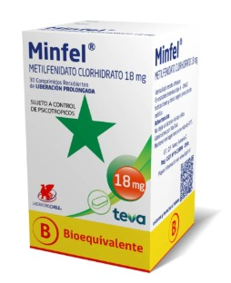
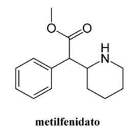

Metilfenidato (Ritalin)
Descripción y uso médico:
El metilfenidato, conocido comercialmente como Ritalin, es un estimulante del sistema nervioso central utilizado principalmente para tratar el Trastorno por Déficit de Atención e Hiperactividad (TDAH).
Importancia de la concientización:
Existe la falsa creencia de que, al ser recetado para mejorar la concentración, su uso ocasional es seguro. Desmentir esta idea es crucial para prevenir la automedicación, especialmente en entornos escolares y universitarios.
Riesgos y consecuencias del mal uso:
Fuera del uso terapéutico, el Ritalin es utilizado como droga para mejorar el rendimiento académico o como estimulante recreativo, especialmente entre estudiantes. Esto puede causar insomnio, ansiedad, taquicardia, hipertensión, psicosis inducida y dependencia. El uso continuado sin supervisión médica puede tener graves consecuencias a nivel neurológico y cardiovascular.
 